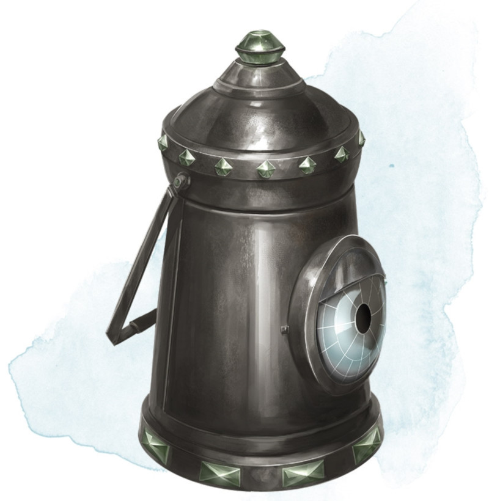

Lanterne de révélation
Objet merveilleux, peu commun
Tant qu'elle est allumée, cette lanterne à capote brûle un demi-litre d'huile en 6 heures et produit une lumière vive dans un rayon de 9 mètres et une lumière faible dans les 9 mètres suivants. Les créature et objets invisibles deviennent visible tant qu'ils sont dans le halo de la lumière vive. Vous pouvez utiliser une action pour rabattre la capote de la lanterne, réduisant la luminosité à un halo de lumière réduite de 1,50 mètre de rayon.
Dungeon Master´s Guide (SRD)
